The Pergola Shade concept from version 7, in the brand's own green. The car is wrapped in satin sage, and the soft shadow of pergola slats and a wisteria vine across the back half is printed in a deep green, so it reads as real shade on a green car. The logo is in gold (the brand's gold-on-sage pairing) and the lettering is in cream, quiet and flush left on the front doors. The car in these images is Gio's own 2025 Juniper Model Y.
Photo-style images made with Magnific (AI, Nano Banana Pro). They are concept images, not photos of the wrapped car. The side and rear images were made directly from Gio's own photos of his car, so the body, lights and wheels are his. Every word was proofread letter by letter. The exact artwork is in the proofs further down.
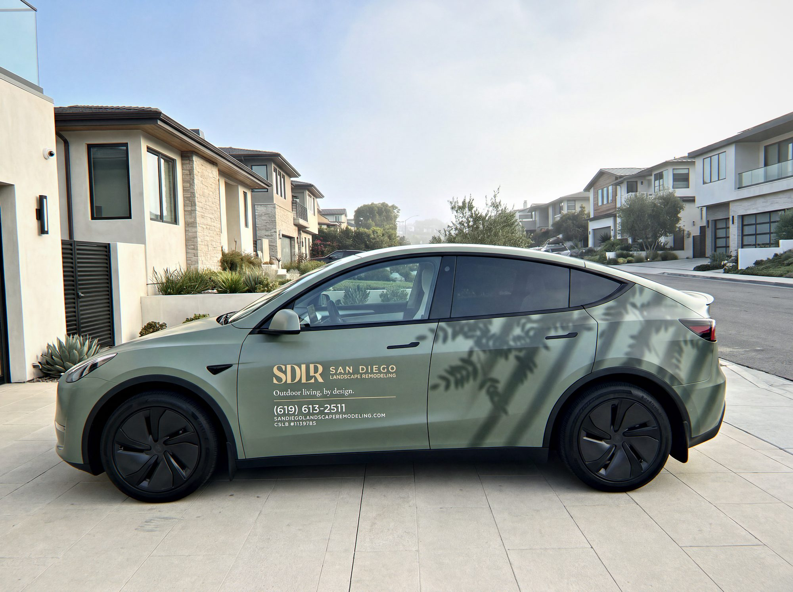
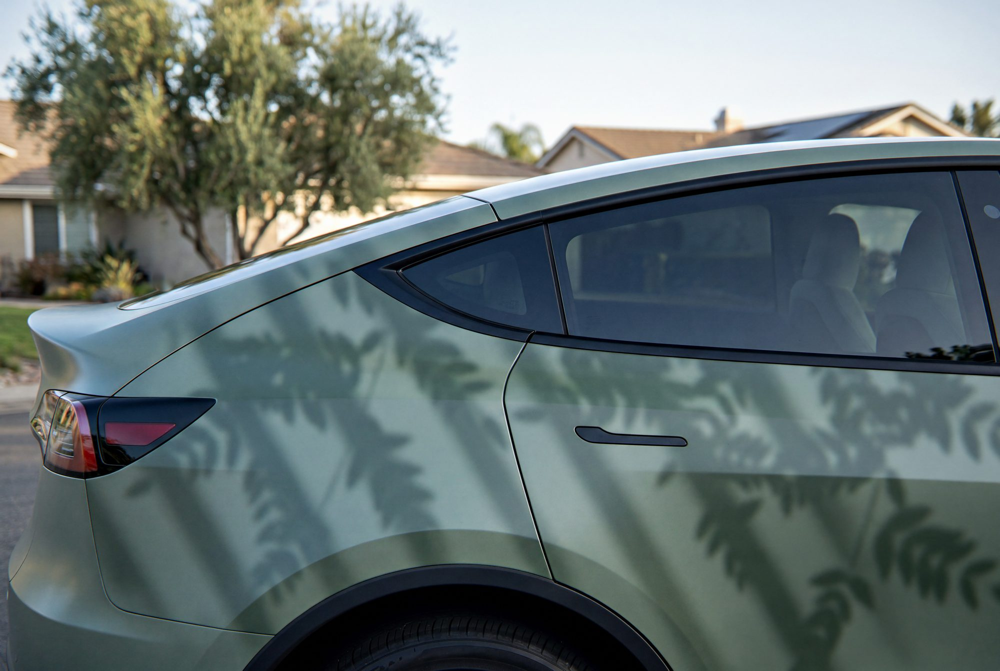
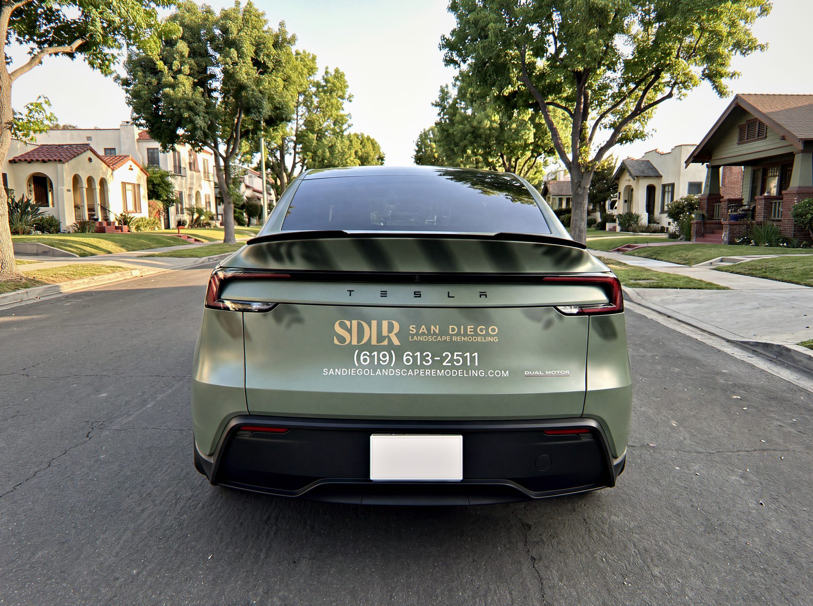
#4E5D4A) instead of paper cream, printed, with a satin finish.#17211A) at up to 45% strength, which gives about the same contrast on sage as version 7 has on cream.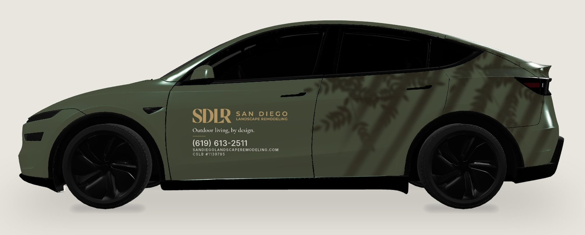
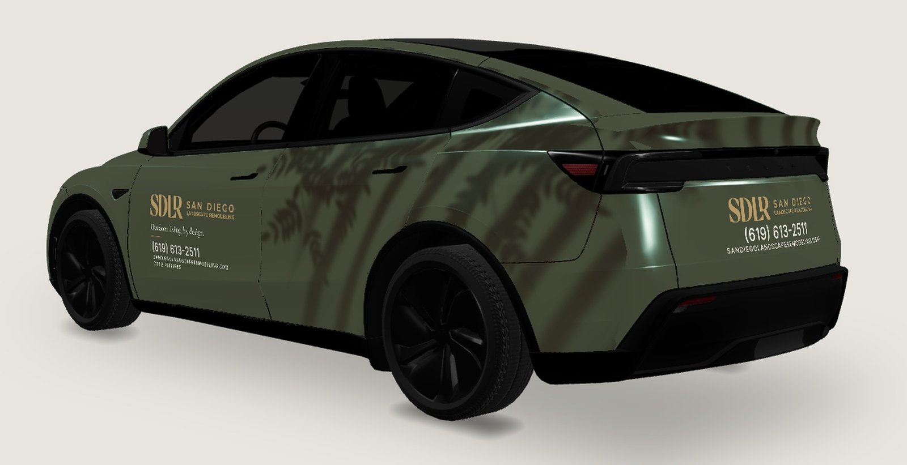
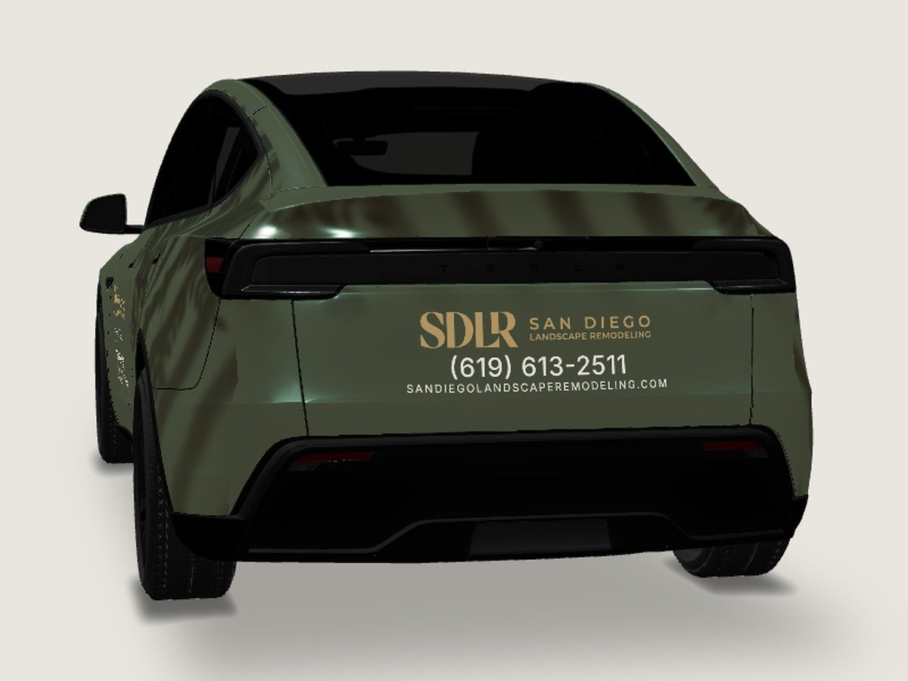
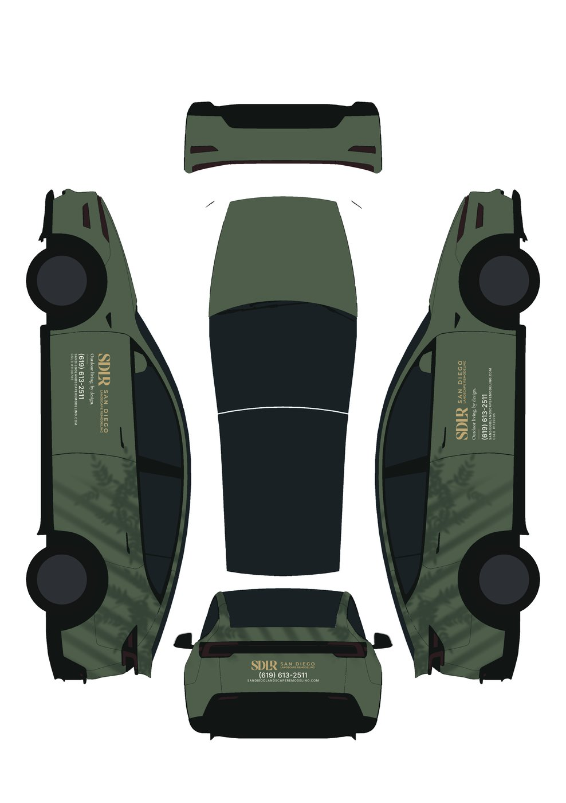
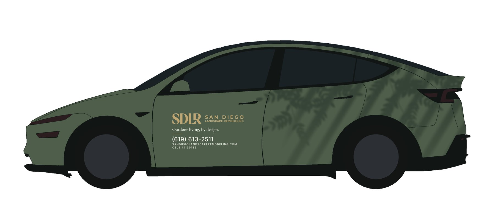
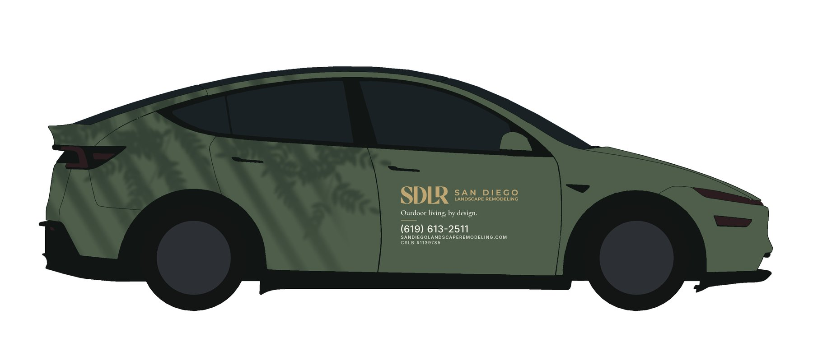
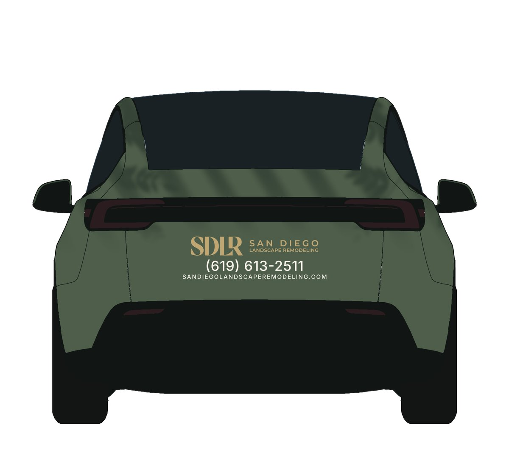
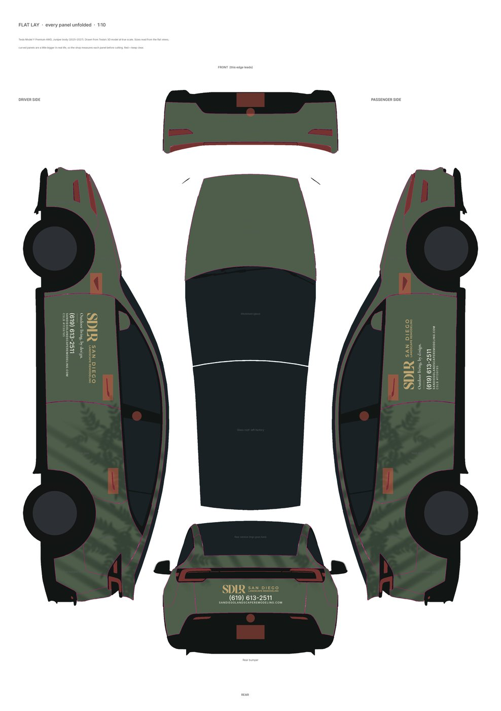
| Car | 2025 Tesla Model Y Premium AWD, the new Juniper body, with black 19 in aero wheel covers |
| Body | Brand sage, printed on white cast film with a satin (luster) laminate |
| Rear doors, quarters, liftgate | The pergola shade: soft slat bands and wisteria leaves in deep green, up to 45%, printed in the same pass; front doors and fenders stay clean |
| Front doors | Flush left: horizontal SDLR lockup, 30 in (gold, metallic vinyl) · Outdoor living, by design. (Cormorant Garamond, 1.2 in caps, cream) · short gold rule · (619) 613-2511 (1.8 in, cream) · SANDIEGOLANDSCAPEREMODELING.COM · CSLB #1139785 (0.8 in, cream) |
| Liftgate | Horizontal gold lockup, 24 in, then (619) 613-2511 (1.9 in, cream) and the website, centred under the light bar |
| Rear glass | Clean: no vinyl |
Working files (layered .ai, print PDF at 1:10, proof PDF, README) live in Drive:
02 Clients/san-diego-landscape-remodeling/Vehicle/wrap-design/2026-11-21-v8/ (versions 1 to 7 kept beside it)